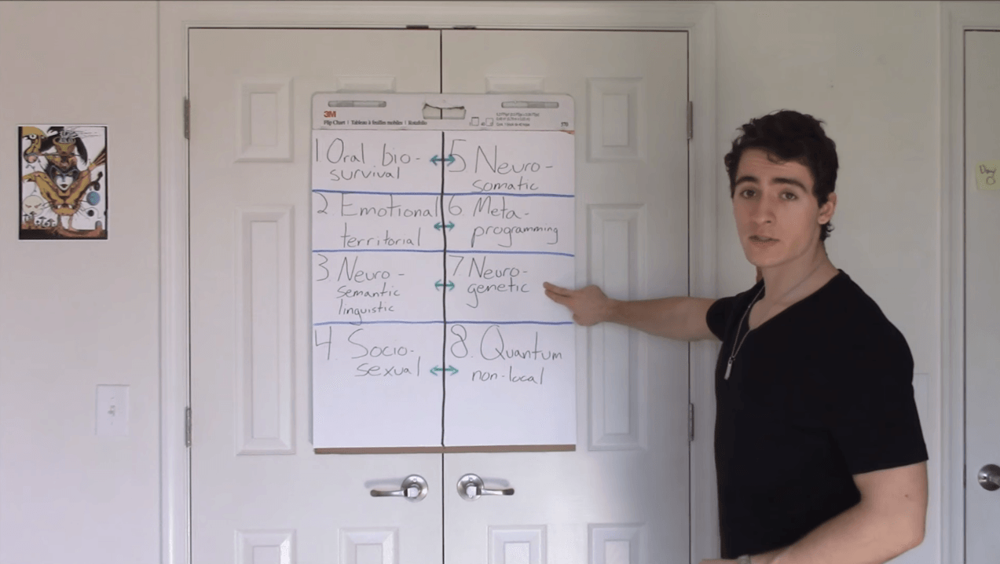
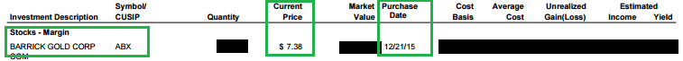
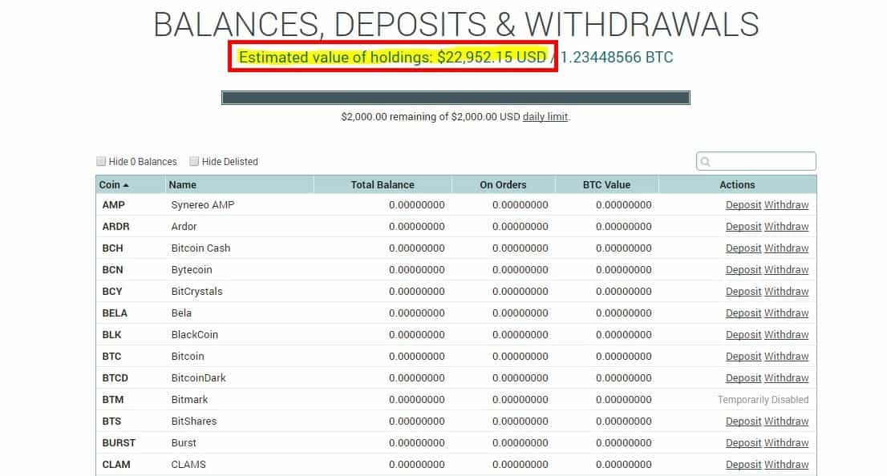
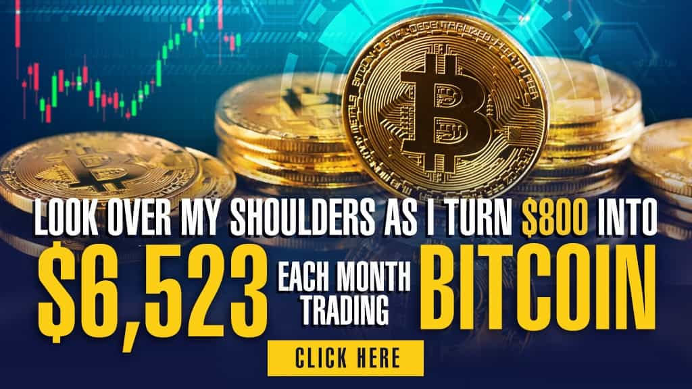
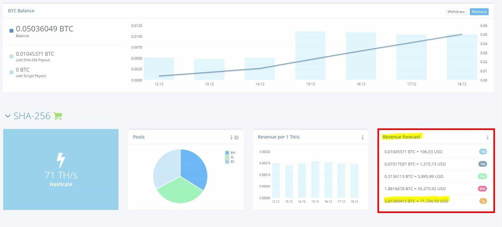
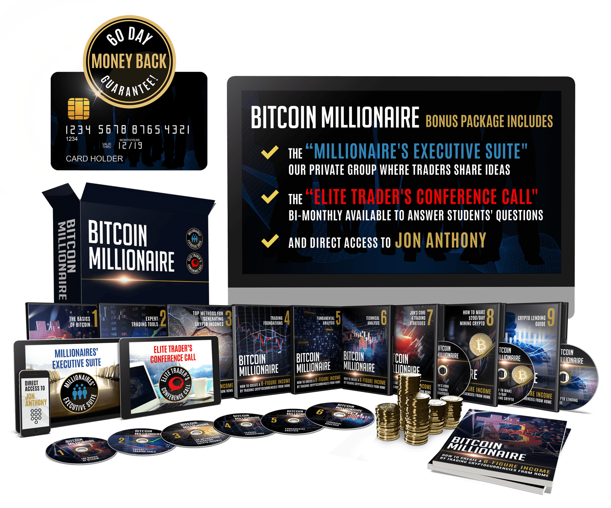

The following article is sponsored by Jon Anthony’s Bitcoin Millionaire.
I remember the last job I had, before deciding to say “fuck all” and walk off into the sunset. It was at a tanning salon, funny enough, and the gig seemed great. I was 21 years old at the time, and it paid $10 an hour, gave me free tanning, and best of all there was only one other guy that worked there…good, right? Dead wrong.
Within a week, the shiny veneer of this new job wore off, and countless squabbles between female employees began to emerge. There was drama everywhere you looked—drama over this, drama over that. How the hell is a man supposed to navigate this feminized workplace nowadays when a single look or comment can get you fired?
He’s not… and that’s something myself and many other men are beginning to realize. If you want to TRULY be financially successful in today’s world, you need to develop an income you can control. You cannot allow your financial freedom to be tied to some massive conglomerate with a feminist-laden HR department, ready to fire you at the very first chance they get. You need to take things into your own hands, and that’s exactly what I did.
My Story (And How I Made $3,000 in the Past 14 Hours)

My first YouTube video (before I knew how to make money online)
Yesterday I netted $3,000 from a single Dogecoin trade (yes, that’s right—the coin with a Shiba Inu on it). I saw an ascending wedge, a direct correlation with Bitcoin’s incoming bounce, and my private trading group had heard rumors of a new exchange listing. So, I pulled the trigger. It went up 40% in less than a day.
I remember the exact moment it happened, too. I literally placed the trade at 2am (I don’t have a schedule, since I can place a trade 24/7), thinking I’d net maybe a few hundred bucks. The next day I woke up, went to the gym, and checked my phone while I was there. I almost spat out my pre-workout when I saw how much I’d made.
“HOLY SHIT!” I muttered out loud. My portfolio had gone up by over $3,000… literally overnight. I felt so excited and thankful that I’d taken a chance at life. If I hadn’t had the courage to pull the trigger and become self-employed, there’s no WAY I’d be able to wake up at 2pm each day and rake in tons of cash on my own time.
Like I said, it wasn’t always like this though. Back in 2015 when I first made the decision to drop out of college, times were tough. I took a gig as an ROK writer to help get some money on the side (thank you, Roosh) and eventually started my own blog: Masculine Development.
It was a big success, and after several years of extremely hard work (writing over 200+ seriously in-depth articles), I’m able to take it easy. Now I just maintain the website with an article every week or so, and place a few trades here and there, and voila—I’m in the top 1% of earners in the United States.
How You Can Make $100,000/Year Trading Bitcoin

I’m not going to lie, when I first started trading the markets when I was 18, it took a lot of time and effort. I spent literally months and months studying, learning, taking notes, and making mistakes. After time though it paid off. I made my first trade (Michael Kors stock) and netted around 30% in just a short few months. This is about 4x what the average Wallstreet trader makes in a whole year.
Then, I went onto making 268% in just 5 months by leveraging Gold and Silver mining stocks during Brexit. In fact, I detailed how I predicted this, and give proof for my claims in an article I wrote. There is also proof above, of my buy and sell orders at specific prices. You can see I bought ABX at $7.38 and sold it at $19.32 a few months later. I made in 5 months what most Wallstreet traders take over 10 years to accomplish: a 268% return.
Things only got better though. When I discovered Bitcoin in 2017, I was very intrigued. I’d heard about it from my friend back in 2014, but didn’t think anything of it. Fast forward a few years, and he was sitting on a massive pile of cash (that allowed him to buy a house at 21 with zero debt). I was immediately obsessed with the cryptocurrency markets, and began my journey learning about them. Little did I know, it would be the craziest thing I ever did, and also the most profitable thing I ever did.
10x Your Money in Just 1 Year

When I started trading Bitcoin in 2017, I was very wary—wasn’t that what drug dealers used to buy pounds of heroin from silk road? I only put a few grand into crypto, but within a matter of a few months, I’d turned that $3,000 into over $22,000 thanks to the skills I cultivated from trading the stock markets. In fact, I attached proof right above. That’s my Poloniex account back in December. My, how it’s grown…
See, what most people don’t understand is that you can make 10x, or even 100x your money by trading cryptocurrencies when compared to stocks, for five simple reasons:
- There Are Almost No Professional Traders in Crypto (Competition is EASY)
- Very Few Banks Are Involved Yet
- Crypto is VERY Volatile
- There’s ZERO Barrier to Entry
- Bitcoin is Fundamentally Revolutionary
When you understand that these reasons will give you a 10x advantage when you trade Bitcoin, it’s almost a no brainer—why would anyone start trading STOCKS when they could apply the same principles to cryptocurrency and make 10x, or even 100x the money?
Some people say that “Bitcoin is Dead,” but those fools don’t realize Bitcoin has been declared dead over 273 times so far by mainstream media. Bitcoin is NOT dead, and it’s going to come back with a HELLISH vengeance in the next two years (according to my algorithms and predictions).
Mark my words, over the next two years, we’re going to see thousands of men become financially free thanks to cryptocurrencies. There is going to be an unprecedented explosion of wealth in Bitcoin, Ethereum, Litecoin, and other alt-coins over the next few years… and the only question is, will you be in, or will you be out?
My Offer to You

Over the past six months I’ve put together an inside trading group with about 30 men, hellbent on becoming millionaires by 2022. Some of them, such as one of my students from India (he’s only 16!), have been placing very successful trades, sometimes netting up to 15%, 25%, or even 35% in a single day.
I had initially intended to only allow 30 students into this group, because it’s so coaching intensive for me. Every day I’m answering questions, recording market updates, and telling my students EXACTLY what I’m buying and when I’m selling it.
I’ve decided to open it up again though to another group of 30 people, to help as many men become millionaires by 2022 as possible.
I remember being a broke, angry kid who didn’t want to work in a corporation for the rest of my life… and because that story resonates with me, I want to help as many men as possible attain my lifestyle.
Every day I wake up when I want (usually around 2pm). I go to the gym right afterwards, check a few trades while I’m there, and hit the sauna. I get a nice meal nearby (usually around $50), head home, and check on my trades once more. Then I go out, game some of the girls in my city, and usually end up taking one of them home.
I have no commitments, no schedule, and best of all, NO BOSSES. I want YOU to have this kind of life, because believe me, when you feel the excitement of that “ping, ping!” on your phone going off, to let you know that you’ve just made $3,000 in a single day, it will all be worth it.
So I’m opening up my highly secretive course: “Bitcoin Millionaire” to another 30 students who want to get in on the offer while it’s still good. Believe me when I tell you though, that you’d better act fast—because the last time I opened up the gates, it sold out within 7 minutes (no, I’m not kidding…people were PISSED!).
Some Proof of My Trades

Now I know what you’re thinking… “How do I know I can trust you, Jon? I mean you wrote for RoK for 3 years, but still, I just want to be sure.” That’s a perfectly normal thought to have, and I know there’s a TON of scammers out there, so I always try to verify my claims with actual, rock-hard, solid proof.
For starters, do you see that picture right above? That’s a screenshot of a mining contract I purchased a while back. At the time, it was making me $200 a day in passive income.
I’ve perfected the method of purchasing mining contracts (which I cover in my course) at the EXACT right time, so that I can easily make hundreds of dollars a day in passive income. In fact, that’s only one of my contracts.
“Okay, that’s cool, Jon—but how about when Bitcoin crashes? How do you know?” Well, would you have guessed that I predicted the cryptocurrency crash of 2017? See my tweet below:
Right before Bitcoin tumbled a whopping 40% in just 3 days, I warned my followers on Twitter to GET OUT and sell EVERYTHING they had! Those who listened walked away with a small fortune. Those who didn’t? They lost it all. Using the technical analysis and fundamentals that I teach in my Bitcoin Millionaire course, I’m able to NAIL the exact highs, and buy at the exact lows. This is something that few traders can boast.
Over the past few months, I’ve seen students of mine accumulate small fortunes by simply applying the knowledge I’ve taught them in my course. Whether they’re young or old, if they’re willing to take a chance, and eager to learn from their mistakes, they’ll be making a six-figure income in no time at all.
What You’ll Get

Like I said, I’m going to open my course up one more time, for any of you men who are eager to learn, and willing to dedicate the time necessary to make a six-figure income from trading cryptocurrencies.
Mark my words though, once that clock strikes “zero” I will close this course FOR GOOD. I’ve already received dozens of emails from readers begging me to get in, and I’ve had to reject almost all of them, because I can’t coach more than 50 or 60 students at once. It’s just too much for me.
So if you’re humble and willing to learn, here’s what you’ll get when you my buy my course, Bitcoin Millionaire:
- Complete Instant Access to the Full 12-Hour “Bitcoin Millionaire” DVD Modules
- Access to The Millionaire’s Executive Suite
- Access to Jon Anthony’s Personal Market Updates
- Access to the Elite Trader’s Conference Calls
- Access to Jon Anthony Himself
- A Full, 60-Day Money Back Guarantee
This is a once-in-a-lifetime opportunity, and believe me, you will regret it if you don’t take me up on it. When you hear about how Bitcoin hit $100,000 on MSNBC next year, you’ll think back and WISH you had taken this opportunity when you had the chance. By then though, it will be too late—my students and I will be long gone.
So here is what I ask you to do… Sign up to be notified when the course re-opens, and watch your email like a HAWK. Once I send out the official release date, mark it on your calendar, and be there to claim your spot.
Learn how you can start earning thousands of dollars a month from trading cryptocurrencies, sign up for my personal market updates, and send me a message in our private trader’s group so we can start working on a personalized plan for you.
If you buy the course when I re-open it, and don’t like what I have to offer… for ANY reason at all, just send me an email personally ([email protected]) and I’ll refund your money immediately. You have literally nothing to lose. Just buy the course, check it out, and take your time with it. You have nothing to lose and everything to gain. Click here to get on the Bitcoin Millionaire early bird list.
Advertise Your Product Or Site On Return Of Kings